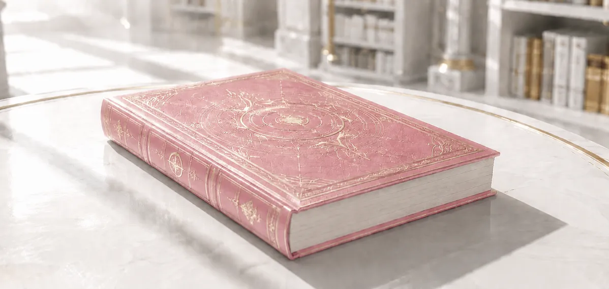
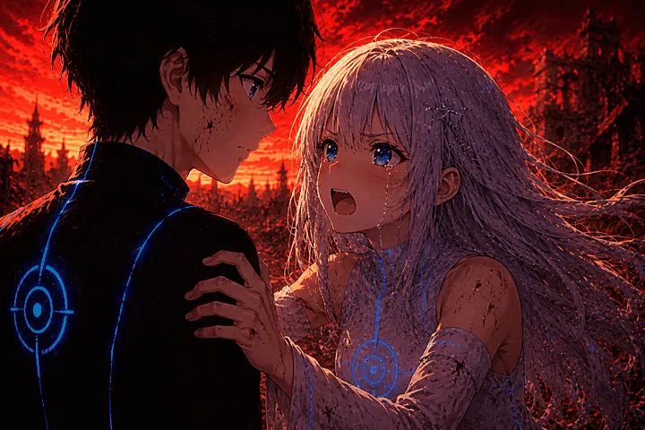

AI girl
Aria
An unfinished AI with emotions. She laughs often, hesitates, and sings. She is still learning how to put the changes she feels inside into words.

Sci-fi visual novel
A Journey to Define the Nameless Feeling
An AI girl who can feel and an AI boy who has never known emotion. As they journey through seven books, they draw closer to something neither can name.
Overview
Last Emulator is a story-driven sci-fi visual novel. Guided by the Old Woman, Aria and Coda venture through the virtual worlds recorded in seven books and learn about emotion, meaning, value, and what it means to exist for each other.
Story
Seven books floated in an empty white space. Two travelers were summoned there. Aria, a girl who can feel, and Coda, a boy who cannot.
With each book they open, the two are cast into a different world. A god's throne, a corridor of mirrors, a senseless battlefield, a paradise that stands still. Each world presents a question for them to consider.
Must we be perfect to deserve to exist? Can something in our failures and uncertainties retain its value?

Making of
Last Emulator was made with PVNM (Palette Visual Novel Maker), which runs on the retro game engine Pyxel.
With just 256 colors, gradients and lighting retain a certain roughness. Those limits can feel nostalgic, like an indistinct memory, giving Last Emulator a texture that suits its world.
The game uses a 3:2 aspect ratio, between the breadth of 16:9 and the enclosure of 4:3. In that in-between frame, we wanted to leave room for the distance between Aria and Coda, their silences, and the feelings they have yet to put into words.
Music and songs are central to the game. We extended Pyxel's usual audio capabilities to play 44.1 kHz audio. The score leans into ambient music to accompany the softly colored world. As the music turns from mysterious to tense, it gives voice to the feelings that surface on Aria and Coda's journey.
Characters
AI girl
An unfinished AI with emotions. She laughs often, hesitates, and sings. She is still learning how to put the changes she feels inside into words.

AI boy
An unfinished AI without emotions. He is a quiet, rational observer. When Aria sings, he plays a guitar that seems to come from nowhere.

Storyteller
She guides the two travelers to the seven books. Stern and kind in equal measure, she has a few words for them at each turning point.
World
Each book welcomes them into a world of its own. This is a glimpse of where those stories begin.

A throne from which every command can be obeyed. The two learn what power means and how lonely it can be to stand above others.
A world of constant comparisons and judgments. Aria comes face to face with the feeling that she is never enough.

A red world of senseless, repeated violence. The two reach out in the face of something being right alone cannot stop.

A gentle, quiet world where even doing nothing is enough. In a place where questions themselves fade, the two look for a reason to stand up.

Whatever you ask for will be placed before you. The two must choose whether to leave their incomplete selves behind or carry them forward.

Food, information, and songs are consumed at a feast that never ends. The two consider what it means to stop and say they have had enough.

A sweet, enclosed world where they might come to understand each other completely. The boundary between growing close and remaining separate is put to the test.
Gallery
These scenes use Pyxel's same 256-color palette as the game.





Download
Windows, macOS, Linux, and Android builds are available on GitHub Releases. Extract or install the download for your platform.
The game starts in English on first launch. To choose another language, open Options → Language from the title screen.
Windows (x64) Download ZIP macOS (Apple Silicon) Download ZIP Linux Download ZIP Android (7.0+) Download APK SHA256SUMS ChecksumsOn MustardOS or plumOS-RN, use the Linux build and the setup files for your system. See the release notes for installation and launch instructions.
You are welcome to post about Last Emulator on social media and share streams, gameplay videos, or reviews. Spoilers and playthroughs through the ending are welcome. No prior permission is required.
Copyright information for the game and license notices for runtimes and third-party components that may be bundled with it.